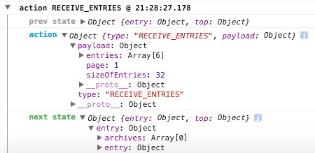

name: rkaneko-theme layout: true class: rkaneko-theme --- class: title-page # React/Reduxにおける # 現場での喜び・ツラみ ### React.js meetup \#3 #### Feb 23, 2016 ##### @ Cybozu, Inc .right[.footnote[Ryota Kaneko]] --- # Agenda 0. Intro 0. What's Redux in 1 min? 0. Pros 0. Cons 0. How do we face Cons? --- class: center ### We implemented cybozu.com status dashboard using React/Redux! <img src="img/cybozu-com-sdb.png" height="400"/> See also ["cybozu.com稼働状況をReact/Reduxで作り直した話"](http://blog.cybozu.io/entry/2015/11/04/080000) ??? 今日はこのときの話と個人的にReact/Reduxを使っていて感じていることについて知見を共有できればと。 --- class: paragraph-page # What's Redux in 1 min? --- background-image: url(img/flux-architecture.png) --- background-image: url(img/redux-architecture.png) --- background-image: url(img/redux-architecture-2.png) --- # Pros + Simplicity + Dev tools --- ## Simplicity ### The separation of concerns + Actions: The fact something happened. + Reducers: Transition the state considering actions. + Views: Just a rendering using props. --- ## Simplicity ### It's easy to implement along the one-way data flow. ex) fetch data asynchronously from the server --- ### 1. define actions & action creators ```javascript export default function fetchTags() { return dispatch => { const endpoint = 'apis/entries/tags'; return invokeGetApi(endpoint) .then(json => dispatch(receiveTags(json.payload))) .catch(error => dispatch(receiveHttpError(error))); }; } ``` --- ### 2. define the initial state ```javascript const initialState = { tags: [], }; export initialState; ``` --- ### 3. transition the state in reducers ```javascript export default function entryReducer(state = initialState, action) { const payload = action.payload; switch (action.type) { case ActionTypes.RECEIVE_TAGS: return Object.assign({}, state, { tags: payload.tags }); default: return state; } } ``` --- ### 4. define a container & connect state & action creators to props ```javascript class App extends Component { componentDidMount() { const { fetchTags } = this.props; fetchTags(); } render() { const { tags } = this.props; return ( <div> <Tags tags={tags}/> </div> ); } } function mapStateToProps(state) { return state; } function mapDispatchToProps(dispatch) { return bindActionCreators(ActionCreators, dispatch); } const WrappedApp = connect(mapStateToProps, mapDispatchToProps)(App); export default WrappedApp; ``` --- # example: tags .center[] --- # Dev tools @ [Troubleshooting / redux docs](http://redux.js.org/docs/Troubleshooting.html) .right[] .right[] .right[] --- # Dev tools + Never mutate reducer arguments - ESLint - [no-param-reassign](http://eslint.org/docs/rules/no-param-reassign) - Copy utilities ex) `Object.assign`, lodash `merge` - `Object.assign`: 1 hierarchical deep copy - lodash `merge`: 2 hierarchical deep copy + Don't forget to call dispatch(action) - [redux-logger](https://github.com/fcomb/redux-logger) .right[] --- # Cons + The React/Redux ecosystem is under development. + The restriction of keeping immutable state in redux async. + Which tools should we choice for testing? + PropTypes shows warnings at runtime. --- ### The React/Redux ecosystem is under development. + What's de facto standard React/Redux router library? |candidates|GitHub star| |:---:|:---:| |[react-router](https://github.com/reactjs/react-router)|10,695| |[react-router-redux](https://github.com/reactjs/react-router-redux) a few month ago [redux-simple-router](https://www.npmjs.com/package/redux-simple-router)|2,021| |[redux-router](https://github.com/acdlite/redux-router)|1,484| .right[counted on Feb 14, 2016] + I personally use .important[**react-router 1.0.x**]. - ∵ more simple and lower APIs than the others --- ### The restriction of keeping immutable state in redux async. In redux, you must not access the same property between different async actions. This is because the state will be sometimes broken. --- ### example ```javascript // TODO ``` --- ### Which tools should we choice for testing? + testing framework? - mocha, jest, ava + bundle tool? - browserify, webpack + stubbing for ES6 Modules with Babel? - proxyquire (only for browserify) - jest - babel-plugin-rewire??? --- ### In our project ... + browserify + mocha + power-assert + espower-babel + .important[(WIP) proxyquire] --- ### PropTypes shows warnings at runtime. + PropTypes are checked .important[at runtime]. - The "shape" of the props sometimes change (because changing server APIs response etc...). - That's why PropTypes are not effective enough in the large scale app. --- # PropTypes in the future <blockquote class="twitter-tweet" data-lang="ja"><p lang="en" dir="ltr">Don’t panic: PropTypes are not going to be removed for quite some time. Still, Flow is the longer term plan. <a href="https://t.co/9ydyQ0EiY9">https://t.co/9ydyQ0EiY9</a></p>— Dan Abramov (@dan_abramov) <a href="https://twitter.com/dan_abramov/status/697511436088668164">2016, 2月 10</a></blockquote> <script async src="//platform.twitter.com/widgets.js" charset="utf-8"></script> --- class: paragraph-page ### Thanks!